HOME & DECOR · SMALL SPACE LIVING · HOGAR CHIC
9 Smart & Chic Finds for Small Spaces
9 hallazgos prácticos y elegantes para espacios pequeños
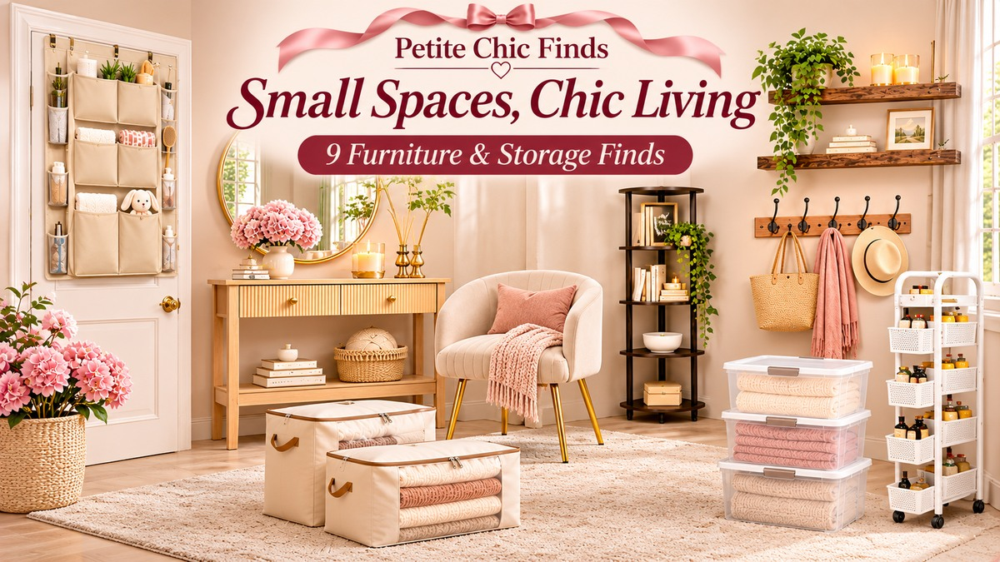
Thoughtful furniture and clever organizers can transform even the smallest room. This curated guide brings together nine Amazon finds—from a slim console and cozy accent chair to shelves, storage bags, bins and a rolling cart—to make every corner feel more useful and inviting.
Los muebles bien elegidos y las soluciones inteligentes pueden transformar hasta los rincones más pequeños. Reunimos nueve hallazgos de Amazon: una consola estrecha, una silla elegante, estanterías, bolsas, contenedores y un carrito con ruedas para organizar sin renunciar al estilo.
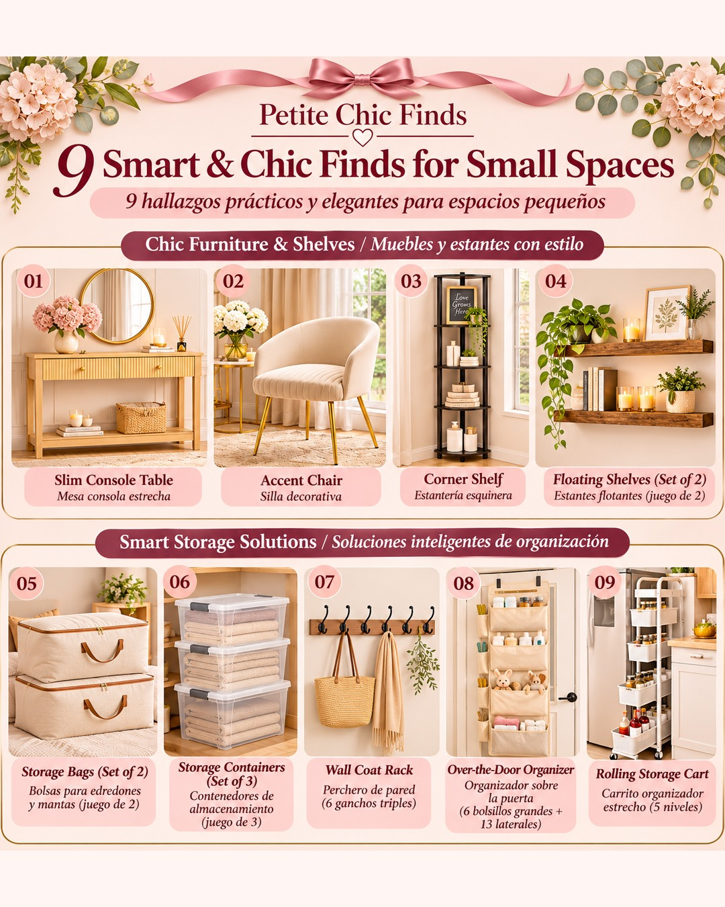
Chic Furniture & Shelves
Muebles y estantes con estilo: cuatro ideas para decorar sin desperdiciar espacio.
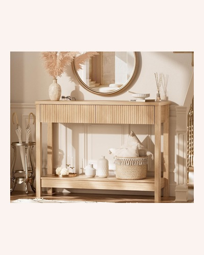
01 · Astimey
Slim Console Table
Mesa consola estrecha
A slim 40-inch fluted console with two drawers and a lower shelf, ideal for an entryway or narrow hallway.
Consola acanalada de 40 pulgadas, dos cajones y estante inferior. Una solución elegante para entradas y pasillos estrechos.
Shop on Amazon / Ver en Amazon ↗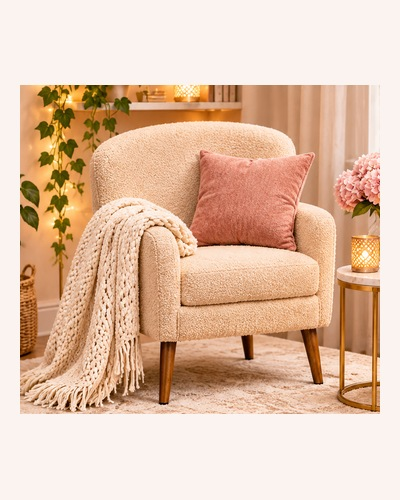
02 · Furnicomy
Beige Accent Chair
Silla decorativa beige
A curved cream-beige accent chair with gold-tone legs for a vanity, bedroom or reading corner. This chair does not swivel.
Silla beige crema de respaldo curvo y patas doradas, ideal para un tocador, dormitorio o rincón de lectura. No es giratoria.
Shop on Amazon / Ver en Amazon ↗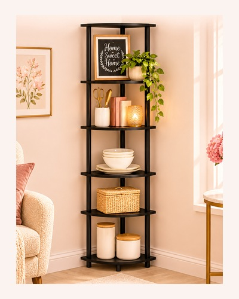
03 · Furinno
TURN-N-TUBE Corner Shelf
Estantería esquinera de cinco niveles
An open five-tier corner shelf in espresso finish that turns unused corners into display and storage space.
Estante esquinero abierto de cinco niveles, color espresso, para aprovechar rincones y exhibir objetos.
Shop on Amazon / Ver en Amazon ↗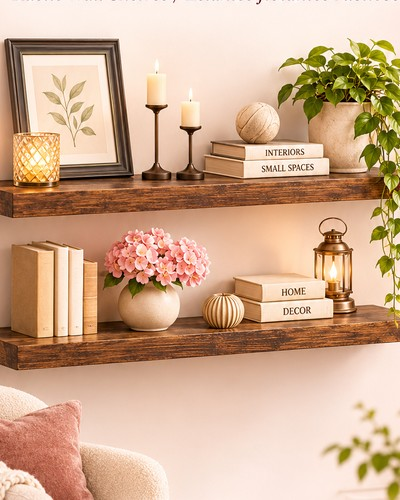
04 · Amazon find
Rustic Floating Shelves, Set of 2
Dos estantes flotantes rústicos de 48 pulgadas
Two 48-inch rustic-brown wall shelves that bring display space to a room without taking up floor space.
Dos estantes de pared de 48 pulgadas en marrón rústico, para añadir espacio sin ocupar el suelo.
Shop on Amazon / Ver en Amazon ↗Smart Storage Solutions
Soluciones inteligentes de organización: cinco formas de aprovechar puertas, paredes, armarios y rincones estrechos.
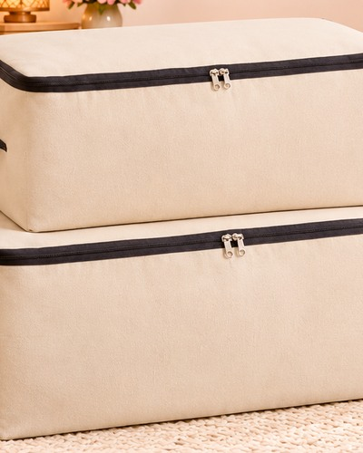
05 · Amazon find
Extra-Large Canvas Storage Bags, Set of 2
Bolsas de lona para mantas y edredones
Two large zippered cotton bags with handles for blankets, comforters, clothing and seasonal textiles.
Dos bolsas grandes de algodón con cremallera y asas para mantas, edredones, ropa y textiles de temporada.
Shop on Amazon / Ver en Amazon ↗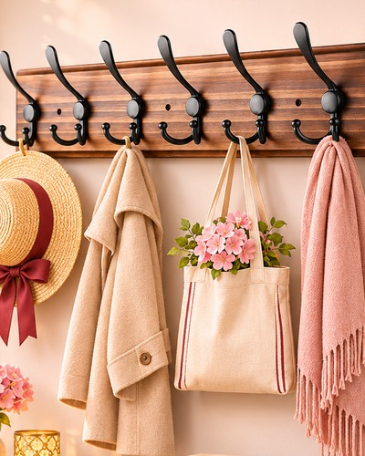
06 · PHINGEER
Wooden Wall Coat Rack
Perchero de madera con seis ganchos triples
A brown wall-mounted wood rack with six triple hooks for bags, coats, scarves and hats.
Perchero de madera marrón para pared con seis ganchos triples, útil para bolsos, abrigos, bufandas y sombreros.
Shop on Amazon / Ver en Amazon ↗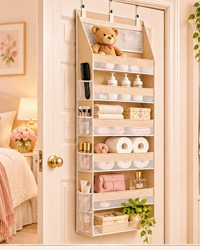
07 · KMSCO
Over-the-Door Organizer
Organizador beige para puerta
An over-the-door beige organizer with six large compartments and thirteen side pockets, useful for closets, bathrooms or nurseries.
Organizador beige para puerta con seis compartimentos grandes y trece bolsillos laterales, práctico para clósets, baños y habitaciones infantiles.
Shop on Amazon / Ver en Amazon ↗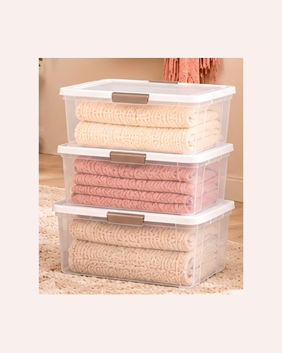
08 · OlarHike
23-Quart Storage Bins, Set of 3
Tres contenedores de 23 qt con tapas
A set of three 23-quart lidded containers for sorting clothing, textiles and everyday household items.
Juego de tres contenedores de 23 cuartos con tapas para ordenar ropa, textiles y artículos del hogar.
Shop on Amazon / Ver en Amazon ↗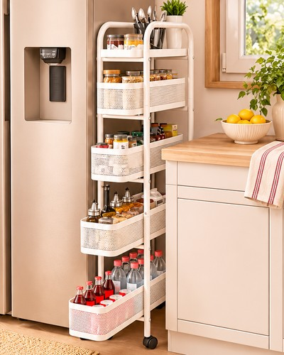
09 · UMDONX
Slim Five-Tier Rolling Storage Cart
Carrito estrecho de cinco niveles
A narrow white rolling storage cart with five basket tiers for tight kitchen, bathroom or laundry spaces.
Carrito blanco y estrecho con ruedas y cinco niveles de cestas para cocina, baño o lavandería.
Shop on Amazon / Ver en Amazon ↗